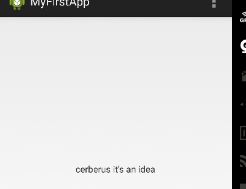
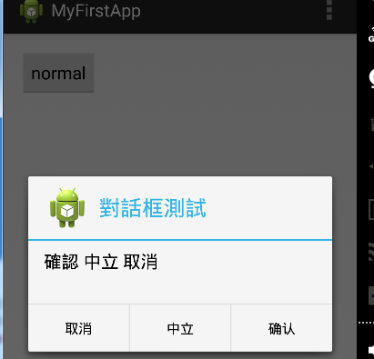
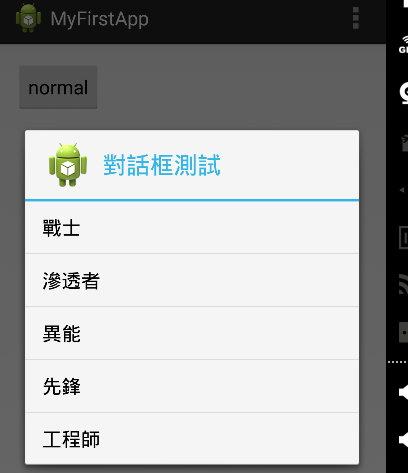
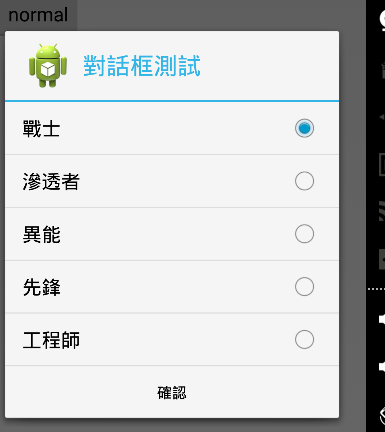
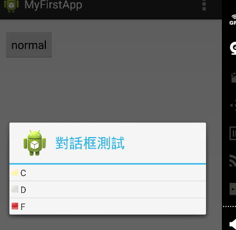

消息提示框
android.widget.Toast 顯示一個消息 提示框 此框 沒有任何 按鈕 不會獲得焦點 經過一定時間後 自動消失
常用 方法
//創建一個 包含 TextView 的 Toast
public static Toast makeText (Context context, int resId, int duration)
public static Toast makeText (Context context, CharSequence text, int duration)
//設置 消息框 持續時間
public void setDuration (int duration)
//設置 對齊方式
public void setGravity (int gravity, int xOffset, int yOffset)
//設置 頁邊距
public void setMargin (float horizontalMargin, float verticalMargin)
//設置 顯示文本
//僅用於 makeText 產生的 消息框
public void setText (int resId)
public void setText (CharSequence s)
//設置 顯示view
public void setView (View view)
//顯示 消息框
public void show ()
消息提示框

//Toast.makeText(this, "cerberus it's an idea", Toast.LENGTH_LONG).show();
Toast t = new Toast(this);
t.setGravity(Gravity.CENTER_VERTICAL, 0, 0);
t.setDuration(Toast.LENGTH_LONG);
LinearLayout layout = new LinearLayout(this);
TextView text = new TextView(this);
text.setText("cerberus it's an idea");
layout.addView(text);
t.setView(layout);
t.show();
对话框
android.app.AlertDialog 可以 实现多种对话框
带 3种 button 对话框

protected void onCreate(Bundle savedInstanceState) {
super.onCreate(savedInstanceState);
setContentView(R.layout.activity_main);
Button b = (Button)findViewById(R.id.button_normal);
b.setOnClickListener(new OnClickListener(){
@Override
public void onClick(View v){
//創建對話框
AlertDialog alter = new AlertDialog.Builder(MainActivity.this).create();
//設置 图标 标题 文本
alter.setIcon(R.drawable.ic_launcher);
alter.setTitle("對話框測試");
alter.setMessage("確認 中立 取消");
//添加按纽
alter.setButton(DialogInterface.BUTTON_POSITIVE,"确认", new DialogInterface.OnClickListener(){
@Override
public void onClick(DialogInterface dialog, int which) {
// TODO Auto-generated method stub
Toast.makeText(MainActivity.this, "单击确认", Toast.LENGTH_LONG).show();
}
});
alter.setButton(DialogInterface.BUTTON_NEUTRAL,"中立", new DialogInterface.OnClickListener(){
@Override
public void onClick(DialogInterface dialog, int which) {
// TODO Auto-generated method stub
Toast.makeText(MainActivity.this, "单击中立", Toast.LENGTH_LONG).show();
}
});
alter.setButton(DialogInterface.BUTTON_NEGATIVE,"取消", new DialogInterface.OnClickListener(){
@Override
public void onClick(DialogInterface dialog, int which) {
// TODO Auto-generated method stub
Toast.makeText(MainActivity.this, "单击取消", Toast.LENGTH_LONG).show();
}
});
//显示对话框
alter.show();
}
});
}
單選 对话框

protected void onCreate(Bundle savedInstanceState) {
super.onCreate(savedInstanceState);
setContentView(R.layout.activity_main);
Button b = (Button)findViewById(R.id.button_normal);
b.setOnClickListener(new View.OnClickListener(){
@Override
public void onClick(View v){
//創建對話框
AlertDialog.Builder builder = new AlertDialog.Builder(MainActivity.this);;
//設置
builder.setIcon(R.drawable.ic_launcher);
builder.setTitle("對話框測試");
//创建 選項
final String[] items = new String[]{"戰士","滲透者","異能","先鋒","工程師"};
builder.setItems(items, new DialogInterface.OnClickListener(){
@Override
public void onClick(DialogInterface dialog, int which) {
// TODO Auto-generated method stub
Toast.makeText(MainActivity.this, "你選擇了" + items[which], Toast.LENGTH_LONG).show();
}
});
//显示对话框
builder.create().show();
}
});
}
帶按鈕 單選 对话框

private int selected = 0;
@Override
protected void onCreate(Bundle savedInstanceState) {
super.onCreate(savedInstanceState);
setContentView(R.layout.activity_main);
Button b = (Button)findViewById(R.id.button_normal);
b.setOnClickListener(new View.OnClickListener(){
@Override
public void onClick(View v){
//創建對話框
AlertDialog.Builder builder = new AlertDialog.Builder(MainActivity.this);;
//設置
builder.setIcon(R.drawable.ic_launcher);
builder.setTitle("對話框測試");
//创建 選項
final String[] items = new String[]{"戰士","滲透者","異能","先鋒","工程師"};
builder.setSingleChoiceItems(items,selected, new DialogInterface.OnClickListener(){
@Override
public void onClick(DialogInterface dialog, int which) {
// TODO Auto-generated method stub
//Toast.makeText(MainActivity.this, "你選擇了" + items[which], Toast.LENGTH_LONG).show();
selected = which;
}
});
//添加按鈕
builder.setPositiveButton("確認", new DialogInterface.OnClickListener(){
@Override
public void onClick(DialogInterface dialog, int which) {
// TODO Auto-generated method stub
Toast.makeText(MainActivity.this, "你選擇了" + items[selected], Toast.LENGTH_LONG).show();
}
});
//显示对话框
builder.create().show();
}
});
}
多選 对话框
private boolean[] checkedItems = new boolean[]{true,true,false,false,false}; final private String[] items = new String[]{"戰士","滲透者","異能","先鋒","工程師"}; @Override protected void onCreate(Bundle savedInstanceState) { super.onCreate(savedInstanceState); setContentView(R.layout.activity_main); Button b = (Button)findViewById(R.id.button_normal); b.setOnClickListener(new View.OnClickListener(){ @Override public void onClick(View v){ //創建對話框 AlertDialog.Builder builder = new AlertDialog.Builder(MainActivity.this);; //設置 builder.setIcon(R.drawable.ic_launcher); builder.setTitle("對話框測試"); //创建 選項 builder.setMultiChoiceItems(items, checkedItems, new DialogInterface.OnMultiChoiceClickListener() { @Override public void onClick(DialogInterface dialog, int which, boolean isChecked) { // TODO Auto-generated method stub checkedItems[which] = isChecked; } }); //添加按鈕 builder.setPositiveButton("確認", new DialogInterface.OnClickListener(){ @Override public void onClick(DialogInterface dialog, int which) { // TODO Auto-generated method stub String str = ""; for(int i=0;i<checkedItems.length;++i){ if(checkedItems[i]){ str += " " + items[i]; } } Toast.makeText(MainActivity.this, "你選擇了" + str, Toast.LENGTH_LONG).show(); } }); //显示对话框 builder.create().show(); } }); }
帶圖標 單選 对话框
1 為對話框 創建 佈局(針對 單獨的每項 佈局) 文件 *.xml 2 創建 SimpleAdapter 3 為AlertDialog.Builder 設置 Adapter
example

protected void onCreate(Bundle savedInstanceState) {
super.onCreate(savedInstanceState);
setContentView(R.layout.activity_main);
Button b = (Button)findViewById(R.id.button_normal);
b.setOnClickListener(new View.OnClickListener(){
@Override
public void onClick(View v){
//創建對話框
AlertDialog.Builder builder = new AlertDialog.Builder(MainActivity.this);;
//設置
builder.setIcon(R.drawable.ic_launcher);
builder.setTitle("對話框測試");
//创建 adapter
int[] imageId = new int[]{R.drawable.c,R.drawable.d,R.drawable.f};
final String[] title = new String[]{"C","D","F"};
List<Map<String,Object>> listItems = new ArrayList<Map<String,Object>>();
for(int i=0;i<imageId.length;++i){
Map<String,Object> map = new HashMap<String,Object>();
map.put("image", imageId[i]);
map.put("title", title[i]);
listItems.add(map);
}
final SimpleAdapter adapter = new SimpleAdapter(MainActivity.this,
listItems,
R.layout.items,
new String[]{"title","image"},
new int[]{R.id.title,R.id.image}
);
//創建 選項
builder.setAdapter(adapter, new DialogInterface.OnClickListener() {
@Override
public void onClick(DialogInterface dialog, int which) {
// TODO Auto-generated method stub
Toast.makeText(MainActivity.this, "你選擇了" + title[which], Toast.LENGTH_LONG).show();
}
});
//显示对话框
builder.create().show();
}
});
}
通知管理器
android.app.NotificationManager 用於 管理 系統狀態欄的 通知 通知不會 自己消失(即使被單擊) 需要 手動刪除
example
MainActivity.java ... protected void onCreate(Bundle savedInstanceState) { super.onCreate(savedInstanceState); setContentView(R.layout.activity_main); //獲取 通知 管理器 final NotificationManager notificationManager = (NotificationManager)getSystemService(NOTIFICATION_SERVICE); Button b = (Button)findViewById(R.id.button_normal); b.setOnClickListener(new View.OnClickListener(){ @Override public void onClick(View v){ //創建 響應 intent Intent intent = new Intent(MainActivity.this,InfoActivity.class); PendingIntent pintent = PendingIntent.getActivity(MainActivity.this, 0, intent, 0); //創建 Notification Notification notify = new Notification.Builder(MainActivity.this) .setContentTitle("標題") .setContentText("文本") .setSmallIcon(R.drawable.ic_launcher) // .setLargeIcon(R.drawable.ic_launcher) .setContentIntent(pintent) //設置單擊 響應 activity .build(); //發送 通知 notificationManager.notify(0x1102/*id*/, notify); } }); } ... InfoActivity.java public class InfoActivity extends Activity { @Override protected void onCreate(Bundle savedInstanceState) { // TODO Auto-generated method stub super.onCreate(savedInstanceState); setContentView(R.layout.activity_info); //獲取 通知 管理器 final NotificationManager notificationManager = (NotificationManager)getSystemService(NOTIFICATION_SERVICE); //刪除 通知 notificationManager.cancel(0x1102); //notificationManager.cancelAll(); Button b = (Button)findViewById(R.id.button_back); b.setOnClickListener(new OnClickListener(){ @Override public void onClick(View v){ finish(); } }); } }